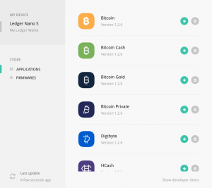

If you have a Ledger device, you can now use it with NanoVault to securely access and send your Nano. Paired together, it is the safest and easiest way to send and receive Nano available! Using this guide you can learn everything needed to send and receive Nano on your Ledger device with NanoVault.
Installing The Nano Application
- Connect your Ledger device via USB to your computer and use your PIN to unlock it.
- Open the Ledger Manager software and install the Nano application from the store. (Confirming the action on your Ledger device when needed)

- Open the Nano application on your Ledger device, you should see ‘Use wallet to view accounts’. If so, you are ready to go!
Configuring Your Ledger With NanoVault
Note: To be able to use your Ledger device with the web wallet, you must be using a Chrome or Opera browser, and the Ledger Manager application must be closed.
- From the NanoVault homepage, choose the option to ‘Import An Existing Wallet’, and then select the ‘Ledger Nano S’ option from the import type dropdown.
- The status of your Ledger device will be shown below. Make sure your Ledger device is unlocked with the Nano application open. If necessary, press the button below to re-check the status of your Ledger after opening the Nano application.
- Once the Ledger is detected, your main Nano account address will be imported into NanoVault and your wallet is ready to use!
Video Guide:
Your Ledger Status
On the left navigation you can find the current status of your Ledger device. When it is not connected, you will be unable to sign any new transactions or add new accounts. If the device status seems wrong, you can click on it to attempt to reconnect to the Ledger device. Your Ledger will only be marked as ready when it is unlocked and the Nano application is open.
Using NanoVault
Once your ledger wallet is imported, you can use the ‘Accounts’ page to view the current status of all your Nano accounts. By clicking on one of your accounts, you can view the full details including transaction history.
Sending Transactions
- Open the ‘Send’ page from the left navigation
- Select the account you would like to send from and enter the address of the Nano account you would like to send to (Or select a contact from your address book)
- Enter the exact amount of Nano you would like to send (Or use the FIAT input below to have it automatically converted)
- Press ‘Send Nano’, then use the confirmation page to ensure the destination and amount are correct.
- If they are, press ‘Confirm Transaction’ which will send the transaction information to your Ledger device.
- On your Ledger device, ensure that the account, destination, and amount look accurate, then use the buttons on your Ledger device to confirm or deny the transaction.
Video Guide:
Receiving Transactions
By default, NanoVault will attempt to receive incoming transactions automatically. This means that when leaving the wallet open, or re-opening it, pending transactions will be sent to your Ledger device for confirmation as soon as possible. Most of the time, you should not have to worry about manually receiving a transaction, but if you do, you can use the following process:
- Open the ‘Receive’ page from the left navigation. (This page only appears when you have pending transactions)
- Press the ‘Receive’ button on the transaction you want to approve. This will trigger a confirmation on your Ledger device.
- On your Ledger device, ensure that the transaction information looks correct, then use the buttons on your Ledger device to confirm or deny the transaction.
Video Guide:
Changing Your Representative
- From the ‘Accounts’ page, click on the account you want to change your representative for to view the Account Details.
- Press the pencil icon on the right side of your account’s current representative (Account must have at least one transaction to change representative)
- Enter your new representatives Nano account address, then press the green checkmark on the right (Or press enter)
- On your Ledger device, ensure that your new representative looks correct, then use the buttons on your Ledger device to confirm or deny the change.
Video Guide:
With that information, you are ready to store Nano with your Ledger Device and access it easily at any time using NanoVault! Besides just supporting Ledger devices, NanoVault also adds in lots of helpful features such as local currency values, a fully integrated address book, and more which make sending and receiving Nano simple and secure.
Data Storage
NanoVault does not store any information about you on a server. The only information stored is in your local browser storage which allows you to use your wallet more easily on subsequent visits. With a Ledger device, the only information stored is your public account addresses, since that is the only information exposed by the Ledger device.